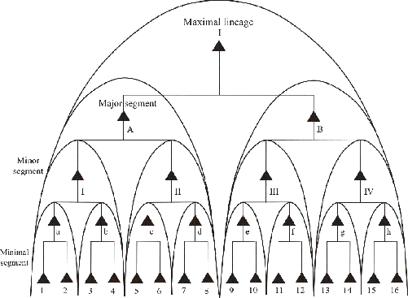
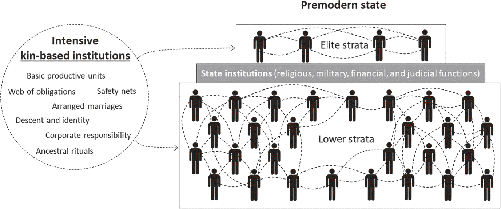

This social and ritual system was infused with a powerful set of supernatural beliefs. Unlike their ancestor gods, who presided narrowly over particular clans, the Tambaran gods governed the entire community—they were village-level gods. Villagers believed that their community’s prosperity and prestige derived from the proper performance of the Tambaran rituals, because those rituals satisfied the Tambaran gods, who, in return, blessed their community with harmony, security, and success. When village amity waned, the elders assumed that people hadn’t been diligently performing the rituals properly and would call for supplemental rites to better satiate the gods. Although the elders had the causality wrong, performing additional rituals still would have had the desired psychological effect—mending and solidifying social harmony. By Tuzin’s account, this was indeed what happened when such special rituals were performed.
The Tambaran gods also fostered greater harmony through their perceived willingness to punish villagers. Unlike the broad-based punishing powers of the powerful and moralizing gods found in today’s world religions, the Tambaran gods were only believed to punish people for inadequate ritual performances. This supernatural punishment, however, would have helped guarantee that villagers conscientiously attended to the rituals, which is crucial since the rituals were doing important social-psychological work in bonding the community.
The Tambaran gods’ supernatural punishment may have also suppressed sorcery accusations and their associated cycles of violence. In New Guinea, as in many societies, people don’t see most deaths as accidental. Deaths that WEIRD people would consider as due to “natural causes” (e.g., infections or snakebites) are often perceived as caused by sorcery—i.e., murder by magic. An unexpected death, especially of someone in their prime, often provoked sorcery accusations, and sometimes led to revenge-driven slugfests between clans that could persist over years or even generations. After the Tambaran arrived in Ilahita, many of the deaths that villagers would have previously perceived as sorcery-induced were instead attributed to the anger of the Tambaran gods, who were believed to strike people down for failing in their ritual obligations. This possibility reoriented people’s suspicions away from their fellow villagers and toward the gods. These new supernatural beliefs thus short-circuited one of the prime fuses that would have otherwise led to community disintegration.11
Overall, the Tambaran was a complex institution that integrated new organizational norms (ritual groups), routine practices (e.g., raising pigs), potent initiation rites, and beliefs about supernatural punishment in a manner that restructured social life. These cultural elements tapped into several aspects of innate human psychology in ways that strengthened and sustained the emotional bonds among Ilahita’s clans. This enabled Ilahita to maintain a large community of many clans while other villages fractured and fell apart.
But, where did Ilahita’s Tambaran come from?
Let’s start with where it didn’t come from. Tuzin’s investigation reveals that the Tambaran wasn’t designed by any individual or any group. When Tuzin showed the elders how elegantly the Tambaran partitioned and integrated their community, they were as surprised as he was. They’d followed simple prohibitions, prescriptions, and rules of thumb about people’s roles, responsibilities, and obligations that created the system without anyone having a global understanding of how it all fit together. As in nearly all societies, individuals don’t consciously design the most important elements of their institutions and certainly don’t understand how or why they work.12
Instead, the Tambaran evolved over generations, morphing into diverse forms as it diffused across the Sepik. Ilahita just happened to end up with the best working version. Here’s the story that Tuzin pieced together:
In the mid-19th century, a Sepik tribe called the Abelam began aggressively expanding, seizing territory, and sending families and clans fleeing from their villages. Because they were more militarily successful than other groups, it was widely assumed that the Abelam had developed some new rituals that had permitted them to tap into powerful supernatural forces. Around 1870, Ilahita’s elders learned about the Tambaran from some of these refugees. It was decided that Ilahita’s best chance to withstand the coming onslaught from the Abelam was to copy the Tambaran from them—to fight fire with fire. Piecing together the refugees’ descriptions of the Tambaran, Ilahita assembled its own version.
Crucially, while Ilahita’s Tambaran did end up resembling that of the Abelam, a number of consequential “copying errors” were inadvertently introduced during the reconstruction. There were three key errors. First, Ilahita “misfit” the ritual group organization to their clan structures, accidentally producing a greater degree of crosscutting and integration. The Ilahita system, for example, put brothers in different ritual groups and partitioned clans. The Abelam version, by contrast, left brothers together and clans fully encompassed within single ritual groups. Second, a misunderstanding created bigger, more powerful Tambaran gods. The Tambaran gods have specific names. Among the Abelam, they are the names of their clans’ ancestor gods—so their Tambaran gods are just an ensemble of their ancestor gods. In Ilahita, the clans each already had their own ancestor gods. Not recognizing the divine Abelam names, Ilahita’s elders superimposed the Tambaran gods over their own clan gods, effectively creating village-level gods where none had previously existed. Although it might seem odd to measure the size of a god, this copying error swelled the Tambaran gods by a factor of 39—instead of sitting at the apex of only one clan, these gods ascended to preside over 39 clans. Finally, Ilahita’s elders simply appended the Abelam’s four initiation rites to their own single Arapesh rite, giving them five initiation levels. By pushing up the age at which senior men passed out of the Tambaran system, this change effectively made the most powerful elders a decade older, and hopefully wiser, than among the Abelam.13
With this retrofit of the Tambaran, Ilahita halted the relentless advance of the Abelam and expanded its own territory. Ilahita swelled further over the subsequent decades as refugees from other villages flooded in. Despite their lack of kinship or marital ties to Ilahita’s clans, immigrants were woven into the community through the Tambaran ritual system.
Ilahita highlights how hard it is to sustain broad cooperation and scale up societies. Even when facing mortal threats, most Sepik communities couldn’t get more than about 80 men to live, work, and fight together. Instead, people were killed, captured, or driven off their lands. Moreover, while the 300 rule represented a glass ceiling on cooperation, even this degree of cooperation wasn’t easy, automatic, or effortless. Elsewhere in the Sepik, where warfare and raiding were less intense, other Arapesh populations preferred to live in smaller hamlets, with fewer than 90 people.
This case gives us a glimpse of the two key processes that drive up the scale and intensity of cooperation: (1) intergroup competition and (2) the “fit” between different social norms and institutions. Intergroup competition operates through at least five different processes, three of which appear in the Sepik:14
Once a new norm emerges in one group that improves cooperation, intergroup competition can grab ahold of it and spread it widely through one or more of the above processes. As we saw with the Tambaran, these competitive intergroup processes will aggregate and recombine social norms over generations in ways that permit societies to integrate, unite, and expand.
However, in thinking about cultural evolution, it’s important to realize that intergroup competition is just one force among many, and that competition occurs at all levels—among individuals, families, and clans within larger populations. Clans provide a psychologically potent means to generate solidarity among members, in part by reducing internal conflicts. But, as happened in the Sepik, clans often can’t get along, so scaling up to larger societies requires either unifying them or dissolving them. In fact, the more effectively norms galvanize cooperation within subgroups, the more challenging it can be to unite them and scale up.
The process of scaling up is also influenced by the social and psychological “fit” between existing institutions and new norms and beliefs. Novel norms and beliefs must emerge from a group’s existing cultural repertoire, or, if copied from other groups, they must mesh with the indigenous institutions. Channeling and constraining the effects of intergroup competition creates the path-dependence I mentioned: any given set of institutions has only a limited number of likely “next moves” because of the “fit” between social norms, beliefs, and existing institutions. Ilahita, for example, was probably susceptible to adopting the Abelam’s four levels of initiation because they already had one such rite and could simply append the new rituals. Similarly, their dual ritual-group institution would have been unsustainable except for Ilahita’s flexible adoption norms, which permitted each ritual group and subgroup to maintain a viable number of members. In many matrilineal societies, by contrast, identity and inheritance are strictly determined by blood descent (no adoption), so Ilahita’s ritual-group system may have collapsed without a means to redistribute members.20
There’s nothing inevitable, irreversible, or unilineal about this scaling-up process. Populations on different continents, and in different regions, scaled up to varying degrees at different rates, either because intergroup competition was weak, often due to ecological or geographic constraints, or because the constellation of social norms didn’t provide any easily accessible pathways to constructing higher-level institutions. And, of course, complex societies always collapse as the higher-level institutions that integrate and unify them eventually deteriorate and crumble. As you’ll see, the institutional pathways to premodern states are relatively narrow, and the hidden footpath to WEIRD states requires a special maneuver, a kind of doubling back that allows for an end run around premodern state formations. To prepare for our descent from the smallest-scale human societies to premodern states, let’s start where my intellectual journey began, among the Matsigenka in the Peruvian Amazon.21
Human minds adapt, through ontogeny and via cultural evolution, to the social worlds they confront. Because of this, most of us underestimate the degree to which the psychology and behavior of those around us are products of centuries of cultural evolution, with minds honed to navigate the modern world. What are people like when their society has long lacked courts, police, governments, contracts, and even leaders, like mayors, chiefs, and elders?
During my first few months in the Peruvian Amazon, I attended a community meeting in a Matsigenka village along the Urubamba River. At the meeting, the mestizo schoolteachers and an elected community leader spoke urgently about the need for everyone in the village to work together to build a new primary school. The villagers seemed vaguely supportive, though no one really said much. The next morning, I showed up at the agreed-upon time at the construction site with my camera, water bottle, and notebooks, ready to record the day’s activities. No one was there. About a half hour later, one of the schoolteachers wandered by and then a Matsigenka man appeared. We moved some logs around and started to cut one of the logs with a handsaw. A few other men trickled in to help, but by lunch it was just me again. This went on for a few weeks and then apparently continued over several months. Eventually, the teachers stopped teaching and had the students build the new school. Over about six months of fieldwork in several villages, I observed this kind of strong independence repeatedly. From my perspective, Matsigenka appeared hardworking, brave, peaceful, soft-spoken, independent, and self-reliant. But, they didn’t take orders, not from the schoolteachers or the elected village leaders, nor did they acquiesce to the general will of the community.
These weren’t just the idiosyncratic impressions of a naïve graduate student. When my PhD advisor, Allen Johnson, arrived in another Matsigenka community some 27 years earlier, the first thing the schoolteacher who greeted him said was, “We are not very united here,” by which he meant that the Matsigenka couldn’t or wouldn’t cooperate as a community. Similarly, the epigraph opening this chapter captures the experience of Catholic missionaries living among the Matsigenka during the mid-20th century.22
This population provides a fascinating case, because their society is both highly individualistic and entirely rooted in kin-based institutions. Matsigenka nuclear families are economically independent and fully capable of producing whatever they need. Each household maintains its own gardens, where they grow manioc (a potato-like root crop), plantains, and papaya, among other crops. Men make bows and a variety of arrows to hunt peccaries (pigs), tapirs (“forest cows”), fish, and birds. Women cook, brew manioc beer, mix medicines, and weave cotton clothes. Every few years, new gardens are cleared by slashing and burning a fresh patch of forest. Traditionally, Matsigenka nuclear families lived alone or in small extended family hamlets scattered throughout Peru’s tropical forests. Socially, Matsigenka life is highly egalitarian and organized by kin ties. People track relations bilaterally, through both mothers and fathers. However, unlike most sedentary agricultural societies, there are no lineages, clans, chiefs, marriage groups, or communal rituals. Above the household, there are no decision-making or organizational institutions. Aside from incest taboos on certain cousins, people are free to pick their mates and to marry or divorce as they choose. It’s acceptable, even desirable, for people to marry someone from their own hamlet. Ownership depends on labor or gifting, so most things are personally owned. If you made it, you own it unless you give it away. Men own the houses they construct, and women own the clothes they weave. Land can’t really be owned, although gardens are temporarily controlled by whoever cuts and cultivates them.23
Unlike larger Sepik villages, Matsigenka hamlets traditionally maxed out at about 25 people. When disputes arose, hamlets split into nuclear families, who moved away to their distant gardens. Would-be leaders who did occasionally push themselves forward were usually just ignored or cut down to size through public joking. Since World War II, North American missionaries and the Peruvian government have been trying to settle Matsigenka in permanent villages, built around primary schools. But, even after three generations, these villages remain uneasy agglomerations of distinct family hamlets. When they can, families return to the isolation and tranquility of their remote gardens. The nature of Matsigenka social life is highlighted by the fact that, traditionally, people lacked personal names. Everyone was referred to by a kinship term like “brother,” “mother,” or “uncle.” It was only in the 1950s that American missionaries began assigning Spanish names, plucked from the Lima phonebook, to the Matsigenka who settled in villages.24
Matsigenka lifeways represent a kind of cultural adaptation to both the ecology of tropical forests and the dangers posed by larger-scale societies. Looking back into the pre-Columbian period, more complex tribal populations living along the major rivers raided the Matsigenka for slaves. Before the Spanish arrived, Matsigenka slaves were sold to the Inca. Later, the Spanish replaced the Inca, but slave sales continued. Even in the 20th century, the rubber boom meant that any strangers coming upriver were probably trouble.25
By living in tiny hamlets or as solitary nuclear families, and vanishing at any sign of intruders, Matsigenka populations survived and eventually grew. No doubt their lack of large settlements reduced the payoffs to slave raiding. Scattered households hidden along remote tributaries are difficult and expensive to exploit. Even in recent decades, when an anthropologist approaches a remote Matsigenka house, she may find a still-smoldering fire, but no one home.
This set of institutions and lifeways has shaped Matsigenka psychology. Matsigenka are independent, self-reliant, emotionally controlled, industrious, and generous with close kinfolk. Individuals need to cultivate these traits to become well respected and successful in their society. Like WEIRD people, when they look for explanations, they tend to see the behavior of other people as well as that of animals and spirits as resulting from dispositional traits, desires, or character attributes. They also believe that individuals’ actions matter and can influence their fate.26
The nature of Matsigenka psychology is underlined by the ineffectiveness of shame. In many traditional societies, shame emerges as the dominant emotion in social control. However, anthropologists and missionaries have long noted how difficult it is to shame a Matsigenka. Capturing this sentiment, Padre Ferrero explains: “The Matsigenka permits neither repression nor criticism. Should someone, even the missionary whose moral authority he recognizes, try to orient, correct or prevent his behavior, he departs immediately with the phrase: ‘Here one can’t live; nothing but gossip and rumors; I’m going where no one will bother me and I will bother no one.’”27
In many ways, the Matsigenka are even more individualistic and independent than WEIRD people, but socially they are rather different. The circle of trust among many Matsigenka begins to decline rapidly at the edge of their hamlets. They are even suspicious of distant kinfolk and will discuss the hidden motives of seemingly friendly visitors. At large social gatherings, many Matsigenka remain noticeably uneasy, especially if strangers are present; instead, most prefer a solitary life among intimate family members.28
The Matsigenka and other similar populations, which can be found sprinkled around the globe, provide important insights into the nature of human societies and the role of institutions and history in shaping our sociality and psychology. These groups are important because WEIRD researchers, as noted in the Padre’s epigraph, often claim that humans are “ultrasocial,” vastly more cooperative than other species. My response is always “Which humans?”—because so much of our sociality and psychology depends on our institutions. To understand contemporary sociality and human diversity, we need to explore the history of human institutions.29
For much of our species’ evolutionary history, going back at least a million years, the climate has been cooler, drier, and more volatile. From roughly 130,000 years ago until the origins of farming and herding, dramatic temperature swings every few centuries inhibited the domestication of plants, since crops need to adapt to specific climates. At the same time, lower CO2 levels depressed plant growth, making early efforts at farming unproductive and leaving wild plant foods widely scattered. In these marginal environments, the expansive social networks created by the extensive kin-based institutions described for mobile hunter-gatherers in the last chapter would have permitted Paleolithic foragers to range over large territories, access scattered resources like waterholes, flint quarries, and fruit groves, and survive weather shocks like hurricanes and droughts. Populations with these kinship institutions were able to out-survive and often thrive relative to more insular populations.30
Things began to change around 20,000 years ago, following the zenith of the last ice age. Driven in part by cyclical changes in the earth’s orbit, the climate gradually became warmer, more seasonal, and more stable, as the amount of CO2 in the atmosphere rose. Grasses, fruits, legumes, and other plants became more productive and abundant, though less available during certain seasons. This opened an ecological door to farming that hadn’t existed for over 100,000 years.31
To begin investing in certain crops in fertile regions, people needed to be able to secure and hold land. At the very least, farming communities had to be able to reap what they sowed, months or even years later. This gave a substantial edge to groups with any social norms, including rituals or religious beliefs, that made them better able to defend territory. As in precontact Australia and the Sepik, a group’s ability to hold territory depended primarily on its size and solidarity. Similarly, large domesticated herds are easy pickings for hunters, so communities had to defend them. This suggests that the potential for agriculture and herding—food production—created the conditions for fierce intergroup competition to drive up the scale and complexity of societies, generating a coevolutionary interaction between agriculture and societal complexity: the more societies relied on agriculture and herding, the more they needed to scale up (and vice versa). Larger and more unified societies were simply better able to defend their territories.32
People didn’t start farming because it was individually better for them. To the contrary, it was probably less productive than hunting and gathering, at least initially, and only worked when mixed with foraging. As populations increasingly relied on farming, archaeological studies reveal that the less nutritious diets derived from cereals and other crops produced people who were shorter, sicker, and more likely to die young. However, the effects of sedentism and the productivity of unskilled (young) labor were such that farmers reproduced more quickly than did mobile hunter-gatherers. With the “right” set of institutions, farmers could spread across the landscape like an epidemic, driving out or assimilating any hunter-gatherers in their path. Thus, early farming spread not because rational individuals prefer to farm, but because farming communities with particular institutions beat mobile hunter-gatherer populations in intergroup competition.33
The shift from extensive mobile networks to sedentary or semi-sedentary communities capable of controlling territory increasingly favored dense, intensive networks formed by community-level cooperative institutions. Naturally, cultural evolution retrofitted the existing kin-based institutions, modifying them in new ways to harness the same old social instincts to forge tighter and more cooperative communities, as we saw in Ilahita.
One common change was from kinship systems based on bilateral descent, where relatedness is tracked through both mother and father, to institutions favoring some degree of unilineal descent, where relatedness is either matrilineal or patrilineal. I’ll call all of these unilineal kinship institutions clans. Of course, there’s immense variation in the strength of these genealogical “side biases.” Some societies, at the patrilineal extreme, even have beliefs that explicitly deny any blood relationships between children and their mothers.34
Clans evolved culturally to foster greater cooperation and internal cohesion in order to defend territories and organize economic production. Many of the social norms that form clans can be understood by considering how they mitigate conflicts of interest to foster tightly knit units with clear lines of authority. By favoring one line of descent, clans ameliorate many of the internal conflicts found in bilateral kin-based institutions, especially as groups expand. To see these conflicts, suppose we start with a father who is putting together a defensive party of 10 men to drive some interlopers off their community’s land. The father, Kerry, starts by drafting his two adult sons. This is a nice trio, evolutionarily speaking, since not only are all three closely related but they are also equally related—fathers and sons are genetically related at the same distance as brothers. This parity minimizes conflicts of interest within the trio.
Now, Kerry also recruits his older brother’s two sons, and their sons, who are just old enough to tag along. This makes Kerry twice as closely related to his nephews and grandnephews as his own sons are to the same individuals. The nephews are four times more related to their own sons, and to each other, than they are to Kerry’s sons. Still short three men, Kerry recruits his wife’s brother, Chuck, and his two sons. This tight-knit trio is related neither to Kerry nor his nephews, though at least Kerry shares some genetic interest with Chuck through his own sons. As you can see, this is a mess of potential conflicts with several possible cleavages, including between the tightly-knit trios. What if Chuck faces a choice between saving one of his own sons in the melee or Kerry’s two nephews? What if Kerry’s nephew gets one of Chuck’s sons killed?35
To mitigate such conflicts, clans elevate one side of a person’s genealogy over the other and shift the focus of kinship reckoning from one centered on each individual to one centered on a shared ancestor. Thus everyone from the same generation is equally related to a shared ancestor, and everyone has the same set of relatives. This notion is amplified in how these societies label and refer to their relatives in their kinship terminologies. In patrilineal clans, for example, your father’s brother is often also called “father”—or sometimes distinguished as “big father” if he’s older than your father. “Big fathers” are often the bosses. Similarly, your father’s brother’s sons are called “brothers” and his daughters are “sisters.” These extensions of primary kin typically extend outward for as far as we can track: if our grandfathers or great-grandfathers were brothers or even “brothers,” then we’re classificatory siblings and incest taboos kick in. The upshot is that members of patrilineal clans often call all the men of their father’s generation “father” and all of the daughters of these men “sisters.” For clarity, I’ll follow my Fijian friends and refer to genealogical cousins who are called “brothers” and “sisters” as “cousin-brothers” and “cousin-sisters.”36
This reorganization of how people think about relatedness and descent typically coevolved with a variety of complementary social norms governing arenas related to residence, marriage, security, ownership, authority, responsibility, rituals, and supernatural beings. These norm packages fostered cooperation and sustained internal harmony in a variety of clever ways. Here are some of the most common norms and beliefs, which I’ll lay out from the point of view of patrilineal clans.37
These elements of intensive kinship provide just a sampling of some of the ways engineered by cultural evolution to scale up societies by creating dense networks of interdependent relatives. Of course, cultural evolution also devised novel ways to create and scale up institutions rooted in matrilineal clans and bilateral descent groups, called kindreds. Kindreds operate somewhat differently from clans (unilineal descent groups), but the underlying target remains the same: to forge a tightly knit, cooperative network or group. Intensive kin-based institutions like these permitted groups to take and defend territory as well as laying a foundation for cooperative labor, corporate ownership, and mutual insurance against injuries, illnesses, and the infirmities of old age.44
As we saw in the Sepik, scaling up by intensifying interpersonal bonds through clans or kindreds hits a ceiling. Individuals within tightly bound kin-groups can cooperate effectively in controlling territory and organizing production; but then the same kind of social dilemmas and cooperative conflicts reemerge when these kin-based units need to unify in larger communities, such as in villages or tribes (ethnolinguistic groups). Typically, while clans and kindreds usually possess some degree of internal hierarchy and authority, they don’t tend to see themselves as inferior to other kin-groups. Given this equality among clans, how can societies scale up from here?45
Building atop intensive kin-based institutions, cultural evolution has fashioned a variety of integrative higher-level institutions that forge disparate and often squabbling family groups into coherent communities and formidable political units. Here, I’ll discuss two such institutions, segmentary lineages and age-sets, which have emerged independently in a variety of forms around the world.
Segmentary lineages provide an institutional mechanism to directly scale up from single clans. Typically, clans recognize few or no relationships between each other: unless rituals or other norms focus people’s attention, no one remembers more than a few generations back. In a segmentary lineage, however, ritual obligations and other social norms create a broad consensus on what the purported genealogical relationships are among different clans. Crucially, norms demand that more closely related clans, who usually control adjacent territories, ally themselves against more distantly related segments. For example, if a man from clan 16 in Figure 3.2 gets into a cattle dispute with someone from clan 9, then everyone in minor segment IV could end up clashing with all of minor segment III. Similarly, if clan 16 attacks clan 1, a conflict arises between major segments A and B. Most importantly, if any of the clans find themselves in a conflict with an outside group, the entire maximal lineage (I) stands ready to defend their “brothers” and could go to war. In some cases, maximal lineages encompass an entire tribe or ethnolinguistic group, often involving hundreds of thousands of people. These alliances are triggered independently of who attacks whom, or for what reason. One unfortunate consequence of this is that any particularly feisty or aggressive clan could drag the entire maximal lineage into an enduring conflict.46
Psychologically, this descent-based institution is built around personal and corporate honor. A man’s safety, security, and status—and his family’s—are linked to his reputation. Acts of dishonor can dissolve the reputational shield that protects his property and family from thieves or avengers, and they can reduce his children’s marital prospects and affect the reputation of his entire clan, not to mention other members of his immediate family. Hence, relatives closely monitor one another (out of self-interest) and will punish each other in order to restore the honor of their family or clan. Supporting one’s lineage allies, including enacting vengeance when necessary, is central to each man’s honor and his clan’s reputation.

Segmentary lineages have spread by competing with other groups and expelling them from their territory (or assimilating them). For example, using 19th-century historical data from Sudan, anthropologists have illustrated this expansionary process by examining how the Nuer used their superior segmentary lineage institutions to assemble fighting forces of over 10,000 warriors to systematically drive out, or sometimes assimilate, the Dinka over several generations. Despite a large population, the Dinka could never put more than a few thousand warriors into battle. The Nuer expansion was halted only when the British military imposed a temporary peace. Deeper historical analyses reveal these processes playing out over centuries, as segmentary lineages spread widely across Africa.48
Even today, in a world dominated by territorial states, the impact of segmentary lineages can still be felt. In 21st-century Africa, tribal populations with segmentary lineages still experience significantly higher rates of violence and civil war than populations without these kin-based institutions. Based on surveys, these groups also report less trust in outsiders than other nearby communities lacking these institutions.49 Many familiar cases of chronic conflict in Africa are associated with populations organized by segmentary lineages. In South Sudan, for example, the Dinka and Nuer continue slugging it out in a civil war after nearly two centuries of conflict. On the other side of the world, the echoes of the culture of honor that were part of Scotland’s segmentary lineages still affect life and death: in counties of the U.S. South, the higher the percentage of Scottish or Scotch-Irish residents in the first U.S. census in 1790, the higher the murder rate is today. The cultural descendants of these migrants still tend to respond aggressively when their honor, family, or property is threatened. Globally, researchers have argued that the character of “Islamic terrorism” may be best explained by the honor psychology fermented in segmentary lineages. Boko Haram, Al Shabab, and Al Qaeda, for example, all recruit heavily from populations with segmentary lineages, and the character of their kin-based institutions may have shaped the particular religious creeds adopted by these groups.50
In contrast to segmentary lineages, age-set institutions provide a distinctive ritual-centered approach to integrating kin-based groups. As we saw in Ilahita, psychologically potent initiation rituals bring together cohorts of males from different kin-groups or residential communities. After an initiation or series of initiations, norms specify that this cohort—an age-set—is endowed with a new set of privileges, responsibilities, and obligations. Age-sets often work, play, and feast together as a unit, and usually police themselves internally. Failure to meet their cohort’s collective obligations could threaten to delay their next ritual promotion. After their first initiation, for example, boys or teens might be charged with assisting the warriors in the next higher age-grade. Under the command of the senior age-set, warriors often train together and get tasked with tribal defense or tactical raiding. After graduating from the warrior grade, men in their 30s typically attain the privilege of taking a wife and starting a family. Years later, fathers and grandfathers get initiated into a senior level, where they gain political authority as part of a council of elders who make decisions for the entire organization.51
Age-sets are interesting because they create a degree of centralized political authority while (usually) helping to maintain egalitarian relationships among the underlying kin-based organizations. Psychologically, senior members of the governing age-grade are bound by their shared experience in multiple initiation rites, communal responsibilities, and long histories of working together in joint activities, including in war. This allows them to transcend their clan loyalties and kin-based commitments to act as a larger corporate group.
As with other widespread institutions, intergroup competition has spread age-sets in a variety of ways. Because of their military advantages, age-sets have expanded when their more cooperative societies have driven out or assimilated less unified populations. In both Africa and New Guinea, age-sets also spread as one ethnic group joined the age-set system of a neighboring group or when one group simply copied the institution wholesale from another, as happened in Ilahita.52
Segmentary lineages and age-sets allow egalitarian societies to scale up beyond clans and kindreds, but their success in competition with other forms of political organization is constrained because they lack centralized, stable, and hierarchical authorities. Such authorities allow societies not only to respond decisively to changing circumstances, such as encroaching neighbors, dwindling resources, and natural disasters, but also to strategically pursue the conquest of other societies. Any society that managed to centralize authority could potentially have an advantage in intergroup competition. What clever contrivances did cultural evolution cook up to improve command and control?53
Premodern states—in contrast to modern states—were built on an underlying social and psychological foundation formed by intensive kin-based institutions. As best we can tell, states first arose from what anthropologists call chiefdoms. The simplest version of a chiefdom is a single village consisting of a handful of clans in which one clan is set above the others. By virtue of shared norms and beliefs, affirmed routinely through rituals, the chiefly clan makes decisions for the community. Often the senior member of the senior lineage within the chiefly clan is the “chief.” Social norms specify how this office passes down from one generation to the next. The chief, in consultation with senior members of the other clans, makes decisions for the community. These other clans may themselves be ranked relative to each other and possess different responsibilities and privileges. For example, in the Fijian communities where I do research, one clan is responsible for conducting the ritual for installing the chief. This gives him his full authority. A different clan is responsible for administering punishments to miscreants based on the decisions of the chief and his council of elders. Notably, the chiefly clan continues to intermarry with all of the other clans and maintains a full set of kin-based relationships with the entire community. Because male chiefs typically marry multiple wives, their kinship relations run wide across their communities. At this point, it’s still kinship all the way down.54
To be clear, this political power is not coercive, at least at its core; it is legitimate authority built on social norms and sacred beliefs. In Fiji, as in many places, the chiefly clan is believed to be descended from the eldest brother of the founding ancestors of the community, who are perceived to be ancestor gods. In this kinship system, elder brothers must be conferred respect and deference by younger brothers. Tapping this intuition, many believe that disrespecting the chiefly clan’s authority would anger the ancestors. Even when they are disappointed in the current chief, most people from nonchiefly clans still believe that his clan is special and must be the source of authority in their community. Think of this as a segmentary lineage system with ranked clans.
But, how does one clan gain authority or privileges over the others? Though these transitions have occurred independently on different continents over human history, they’re relatively rare. What doesn’t happen is that rational parties sit down, put their heads together, and hash out an effective institutional design. To see what does happen, let’s return to New Guinea, where the anthropologist Simon Harrison stumbled onto one of these transitions in progress.
At the confluence of the Sepik and Amoku Rivers, the community of Avatip consists of 16 patrilineal clans dispersed across three villages. In many ways, Avatip’s villages resemble many others in the region, including those of the Arapesh. Households hunt, gather, farm, and fish. Clans build relationships with other clans through marriages, and males navigate through three initiation rites as part of an age-set system.55
Avatip, however, has evolved a unique set of religious beliefs and ritual institutions, mostly by copying and recombining elements from successful neighboring communities. Each clan was endowed with a set of ritual powers that it used to “nourish” the other clans. Some clans “owned” special rituals that fostered healthy yam crops or reliable fishing yields. Other clans conducted rituals to bring favorable weather, control storms, or limit flooding. Some clans administered the male initiation rites or conducted yearly harvest ceremonies. Of course, it was within each clan’s power to withhold their rituals. Although all clans possessed at least some ritual powers, they were far from equal, because some clans controlled major rituals crucial to male initiation rites or fishing, while others possessed only minor rituals related to activities like harvesting crayfish or frogs.
The ritual inequality among these clans developed slowly over the 20th century. Avatip’s largest clan had been systematically consolidating ritual powers from the smaller clans for at least 60 years. Changes in the ownership of ritual powers occurred at public debates in which one clan would challenge the true ownership of a ritual and its accompanying link to a powerful ancestor. The details of these debates are complex, but gaining control of another clan’s ritual powers hinged mainly on acquiring their secret ancestral names. This knowledge could be gained through marital ties, as the sons and husbands of a clan’s daughters were sometimes given access to these secrets despite their membership in other clans. Or sometimes clans extracted the information through bribery, extortion, or other skullduggery.
In the debates, larger and more powerful clans had several advantages. First, they usually had a handful of accomplished orators with deep ritual knowledge, affording more opportunities to obtain the secret names. Smaller clans had fewer opportunities and often they had no one with the standing or expertise necessary to participate. To meet challenges from the bigger clans, they sometimes had to tap the sons of the daughters they’d married off to other clans. Second, because of both their ritual powers and their economic strength, larger clans attracted more marriage offers. Since men could take multiple wives, larger clans accumulated more women and thus reproduced faster than smaller clans—and the rich got richer. Additional wives created affinal connections that entrepreneurial men could exploit to acquire the secret ritual knowledge of other clans.
The debates provided a legitimate means for one clan to gradually aggregate important ritual powers while slowly altering the underlying cosmology in ways that justified its own superiority. After a few generations, as disputes faded in memory, a clan’s enlarged repertoire of privileges and powers was legitimated in the ongoing ritual cycles and became fully accepted by the community.
These ritual powers had real material bite. In one instance, the clan owning the fishing ritual placed a taboo on Avatip’s fishing grounds that prevented all the clans from fishing for seven months. In another instance, after a young man had inadvertently shamed a group of ritual elders, the clan who owned the initiation rituals decided that he’d never pass through the higher rites, effectively rendering him a permanent adolescent (preventing him from ever marrying or possessing any political influence). When a clan accumulates enough of these rituals, it starts looking an awful lot like a chiefly clan with real power, political legitimacy (powerful ancestors), and sacred authority.56 By institutionalizing inequality through ritual, Avatip was on the road to transforming into a chiefdom.57
Although Avatip might seem like a peculiar example, both anthropological and historical evidence suggest that the manipulation and accumulation of ritual powers and offices has been one of the main ways in which some clans have set themselves above others. Importantly, the creation of an elite clan doesn’t necessarily result in the creation of a single hereditary ruler or chief. Sometimes the senior lineage heads within the elite clan form a council of elders that makes decisions by consensus. Other times, a chief may be selected from among the clan’s senior members, especially during war, but then the lineage heads reassert themselves and take back power in an ongoing cycle.58 It’s the chiefly clans that endure, not the individual chiefs.
By providing a means to make and enforce community-level decisions, chiefdoms often have a substantial edge in competition with more egalitarian societies. This political centralization raises the level of cooperation among the clans in warfare and facilitates the provision of public goods such as temples, defensive walls, and moats. Perhaps most saliently, chiefdoms can cooperate militarily to expand their territory. As in Ilahita and Avatip, clans can pull together for their common defense, but active assaults and raids are initiated by individual clans or voluntary coalitions and thus usually remain relatively small-scale. Chiefdoms, however, often have enough command and control to unify large armies for military campaigns. Consequently, chiefdoms tend to spread through conquest and assimilation as well as by inspiring other groups to emulate their political organization. Of course, facing potent military threats, surrounding communities sometimes “voluntarily” join powerful chiefdoms.59
Since chiefdoms often grow by conquering or assimilating other communities, intergroup competition tends to produce a paramount system in which tens or even hundreds of communities unite under a hierarchy of chiefs, with the paramount chief at the top. Conquered villages might be led by the paramount chief’s relatives, including his wives’ brothers or fathers. Or a village’s existing elite clan might be kept in power and begin intermarrying with the paramount chief’s clan.60
Despite their size and political hierarchy, the simple chiefdoms I’ve been describing were still largely family affairs. Apart from the slaves (yes, there are usually slaves), most individuals could trace a pathway through a social network made up of blood and marital ties to the chief. This remained true as long as the elite clans continued to intermarry with everyone else. True social stratification didn’t emerge until the upper strata stopped intermarrying with the lower strata. This isolated the upper strata and allowed them to claim that they were fundamentally different from the lower strata—truly divine, superior, and deserving. Psychologically, this permitted the elite to be (i.e., claim to be) a separate category of person, with special attributes and privileges.61
Under the right conditions, such stratified chiefdoms can evolve into premodern states—kingdoms—as they interpose new bureaucratic institutions between the elite ruling families and the clans or other kin-groups that dominate the rest of the population (Figure 3.3). The line between stratified chiefdoms and states is notoriously fuzzy—it comes down to a question of which and how many of these society-wide bureaucratic institutions need to be introduced before the whole is “a state.” These institutions variously collect taxes, adjudicate disputes between clans, conduct long-distance trade, orchestrate public rites, and marshal armies.62
To run these organizations, elites intuitively wanted to rely on their family connections, presumably because they distrusted those outside their kin-based networks. However, chiefs and chiefly families had learned, and relearned the hard way, that they must promote competent non-elites into state institutions. Not only did this facilitate the effective functioning of government institutions such as tax collection (which rulers love), but it also protected rulers from other elite families who could consolidate power through these institutions and eventually take over. Unlike the elites, who had some claim to divine connections and ritual prerogatives, commoners and foreigners were much less of a threat. The sharp separation between the elites and everyone else in stratified societies meant that even the most capable non-elites were unlikely usurpers. Interestingly, perhaps the biggest threats to elites were the “illegitimate” sons that rulers everywhere seem to produce (e.g., William the Conqueror and Shaka Zulu).63

Despite the formation of these societal-level institutions, which were often at least somewhat meritocratic, premodern states remained rooted in intensive kin-based institutions, both in the lower strata and at the elite level (Figure 3.3). That is, even when premodern states had effective, impersonal bureaucratic institutions like armies or state religions, these were sandwiched between upper and lower strata that were both enmeshed in intensive kin-based institutions.64
To get a sense of how the first state-level institutions emerged, consider how chiefly clans can harness (exploit?) age-set institutions to create a well-functioning military. This begins when, in consolidating various ritual powers, a chiefly clan gains control over the male initiation rites that lie at the core of age-set institutions. With this leverage, chiefs can deploy the warrior age-grade as a tightly bonded army regiment that must obey (if they don’t, they won’t be initiated into the next age-grade). In 18th-century Africa, for example, some chiefs began deploying the warrior age-grade to collect tribute and raid surrounding groups. In the 19th century, after conquering several groups, the Zulu chief, Shaka, reorganized these age-sets so that they crosscut the many chiefdoms that were now united under his rule—thereby establishing an army composed of ritually-bonded young men drawn from diverse clans and tribes. This created the first state-level institution—the military—of the embryonic Zulu state. The powerful Zulu army struck terror into surrounding populations and would soon give the mighty British Empire much trouble.65
As state institutions multiplied and expanded, they often undermined the kin-based institutions of the lower strata, mostly by usurping some of their functions. For example, during Hawaii’s transition from a chiefdom to a state in the 18th century, the elite had accumulated so much ritual, military, and supernatural power that they took the ownership of land away from the clans of the commoners and reallocated it to suit their own political purposes. Clans had to renew their “use rights” each year by paying tribute to the elites in pigs, dogs, mats, labor, and much more. Similarly, clans were also prevented from keeping deep genealogies, which was presumably meant to limit their size by making it harder for people to unify around common ancestors. These steps didn’t end Hawaii’s tradition of kin-based institutions, although they did sap some of their strength in favor of the elite.66
Premodern states still needed clan and tribal institutions to govern effectively, and sometimes the state even buttressed or augmented the power of kin-based institutions. Typically, premodern states left it to the clans or tribes to police and adjudicate their own internal affairs, including theft, assault, and even murder. States were most likely to intervene in disputes between clans or tribes within their territories, but often this was only if standard blood money payments or other customary judicial procedures had failed to thwart a cycle of violence. Legally speaking, individuals were rarely recognized in a state’s courts and had no rights. Only kin-based organizations had legal standing. Even in powerful premodern states, the lives of most people—including the elite—remained infused with the relationships, identities, obligations, and privileges that derived from their kin-based institutions.67
Of course, there’s no steady descent to chiefdoms and states: societal evolution is a rocky roller coaster in the dark, with lots of unexpected drops, turns, loops, and especially dead-ends. Clans resist subordination into chiefdoms, and chiefdoms resist conquest and assimilation by other chiefdoms and states. In the face of intergroup competition, any institutional elements and recombinations that increase a group’s economic productivity, security, fertility, or military effectiveness tend to spread in the various ways described above. This means that once one community scales up in some way, perhaps through its own quirky internal dynamics (e.g., Avatip or Ilahita), a chain reaction is initiated. Surrounding communities will be wiped out, assimilated, or driven out unless they also somehow scale up.68
Once intergroup competition wanes, which often happens when states or empires manage to eliminate their competition, things slowly fall apart. Without the looming threats posed by competing societies, the competition among ruling families within a society will intensify and gradually tear the state-level institutions apart. Cracks, gaps, and loopholes appear even in the best institutions, allowing narrow elite interests to flood in, as lineages, clans, and sometimes entire ethnic communities devise ways to exploit state institutions for their own ends. For example, what if venerable customs dictate that the king’s firstborn son will take the throne, but the king’s firstborn turns out to be with a woman other than his wife, or with one of his secondary wives? Is it his firstborn, or the firstborn of his leading wife? When the Spanish conquistadors arrived in Peru, the Inca were weak because they were just emerging from a civil war that was caused by an ambiguity in succession between two half-brothers (both sons of the prior Inca). As institutions fail and centralized political organizations collapse, inequality rises and larger societies break down into their sturdiest constitutive parts, which are usually tribes, clans, or residential communities. Even when kin-based institutions have been suppressed by state institutions, their fundamental grounding in our evolved psychology enables them to readily reassemble themselves—in the advent of a state collapse—to resume the functions previously usurped by the state.69
This exploration of societal evolution leads us to one big question: How did we get from premodern states to modern WEIRD societies?
It turns out there’s no direct path because WEIRD societies are organized on an entirely different institutional foundation. Instead of intensive kinship up and down the social strata, we have norms and beliefs, often backed by laws, that actively inhibit such kin-based institutions from forming. In most WEIRD societies, you can’t marry your stepson, take multiple spouses, or arrange the marriage of your teenage daughter to your business partner. Similarly, you could tell your son that he must move into your house after he gets married, but he and his wife may have other ideas, and you have little leverage. You are compelled by custom and law to build relationships by other means and to depend on impersonal markets, governments, and other formal institutions (e.g., to provide safety nets for injuries, disasters, and unemployment).
How were WEIRD societies institutionally rebuilt from the ground up? Notions of family, kinship, and interpersonal relations infused all premodern states, and the mental models furnished by experience in kin-based institutions often shaped the formulation and construction of state institutions. Chinese emperors, for example, were often seen as strong, caring, and authoritarian fathers to their subjects, who, as his children, owed their emperor submission, respect, and devotion. So, how do you get individuals from both the upper and lower strata of premodern societies to leave their clans, kindreds, lineages, age-sets, and tribes to move to cities and join voluntary associations like companies, churches, guilds, unions, political parties, and universities? How do you get people to eschew the obligations, responsibilities, and protections of their extended kin networks and depart their ancestral homelands to join groups of strangers? Today, in the WEIRD world of (relatively) well-functioning hospitals, police departments, businesses, schools, and unemployment insurance, this might seem easy. But, there’s a chicken-and-egg problem. In a world without at least some semblance of these modern secular institutions, people would have been crazy to abandon their kin-based organizations. If people won’t or can’t extricate themselves from their kin-based institutions, how could cultural evolution ever build modern states and related formal institutions in the first place? How do you get here from there?